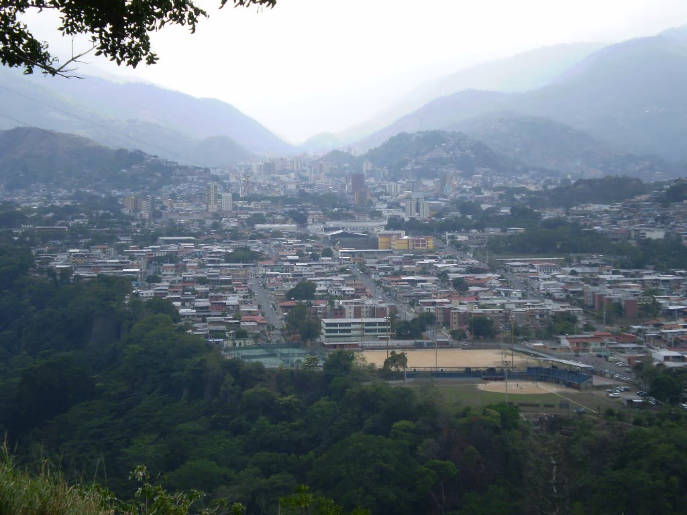

Welcome to the Valera Chamber of Commerce

Join the ChamberUpcoming Events
- Business After Hours Networking Mixer — Thursday, October 16, 2026, 6:00–8:30 PM. Join fellow Valera Chamber members for an evening of open networking at the Hotel Trujillo, with light refreshments, a brief welcome from the board, and a chance to introduce your business to the local community.
- Valera Emprende Business Expo — Saturday, November 7, 2026, 9:00 AM–5:00 PM. A full-day showcase of local entrepreneurs, artisans, and service providers in Plaza Bolívar. Free entry for the public; member businesses receive a complimentary exhibition table and listing in the event program.
- Digital Marketing for Small Business Workshop — Wednesday, November 18, 2026, 2:00–5:00 PM. A hands-on workshop at the Chamber offices covering social media basics, Google Business profiles, and low-cost tools to help Valera businesses reach more customers online. Members: free; non-members: Bs. 150.
Valera Weather